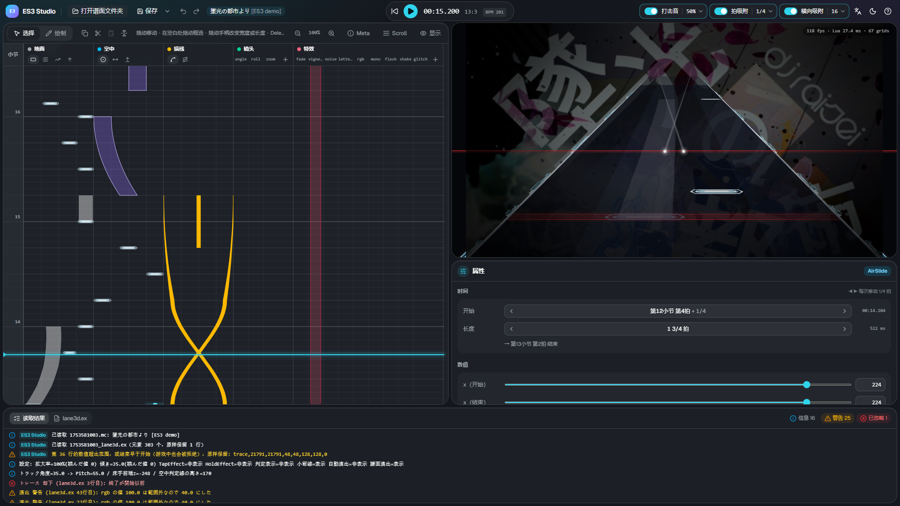

ES3 Studio 使用说明
ES3 Studio 是一款在浏览器中运行的编辑器，用来制作 Malody V 的 Slide 皮肤 Extra-Slide v3（ES3） 的扩展文件 lane3d.ex。
可以一边看按拍排列的时间轴和与游戏相同画面的 3D 预览，一边放置空中音符、描线、镜头演出和画面特效。

需要准备
| 项目 | 内容 |
|---|---|
| 电脑 | Windows / macOS / Linux。不支持手机和平板 |
| 浏览器 | 推荐 Chrome 或 Edge。其他浏览器只能以下载的方式保存 |
| 谱面 | Malody V 的 Slide 谱面，并且 Free Mode 已开启（谱面编辑器中的开关）。打开整个歌曲文件夹 |
| 游戏 | 在游戏中确认时，请把皮肤设为 Extra-Slide v3 |
无需安装，打开网页即可使用。谱面和文件不会被上传到任何地方，所有处理都在你的电脑上完成。
开始使用
- 点击画面中央或左上角的 「打开谱面文件夹」，选择谱面（
.mc）所在的歌曲文件夹 → 打开与保存 - 在左侧时间轴上放置元素，在右下角的属性中调整数值 → 时间轴 / 属性与元素
- 用右上角的预览和播放（Space）确认在游戏中的效果
- 点击 「保存」（Ctrl+S），把
<谱面名>_lane3d.ex写入谱面文件夹。在游戏中打开谱面即可生效
画面说明
| 位置 | 内容 |
|---|---|
| 上方工具栏 | 打开・保存・播放・时间、打击音・拍吸附・横向吸附、语言・主题・帮助 |
| 左：时间轴 | 时间从下往上流动。在地面・空中・描线・镜头・特效轨道上放置元素 |
| 右上：预览 | 直接运行皮肤脚本的 3D 画面。背景图片也按谱面的设置显示 |
| 右下：属性 | 选中元素的时间和数值 |
| 下方：读取结果 / lane3d.ex | 读取结果（警告・已忽略）和将要保存的内容 |
拖动面板之间的边界可以调整大小。
页面
- 打开与保存 — 如何打开谱面文件夹、读取哪些文件、如何保存
- 时间轴 — 放置和移动元素、吸附、播放、快捷键
- 属性与元素 — 编辑数值，以及元素的类型
- 谱面信息（Meta） — 曲名・难度名・Free Mode・背景图片等
- 流速（Scroll） — 按音符组设置速度（hs・timinggroup）